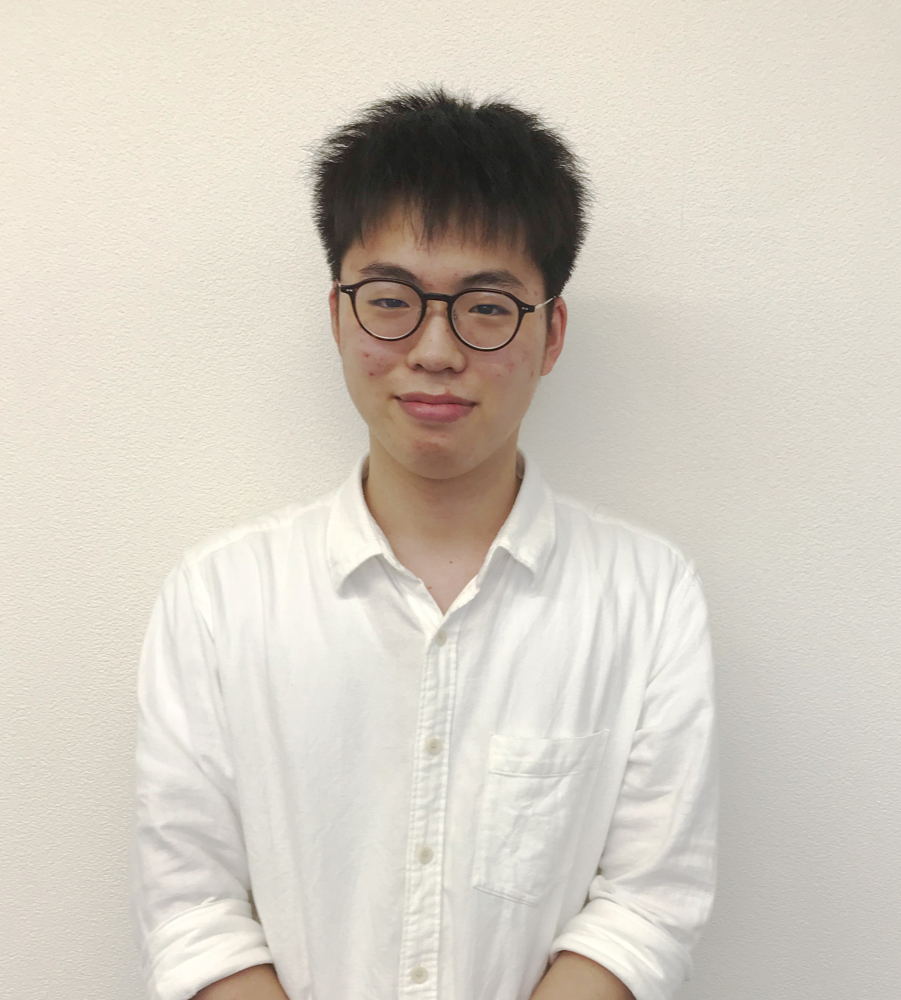
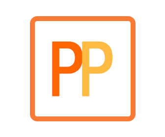
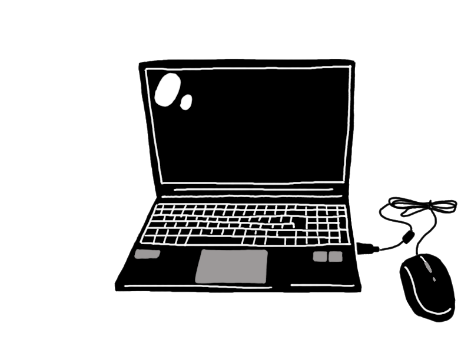
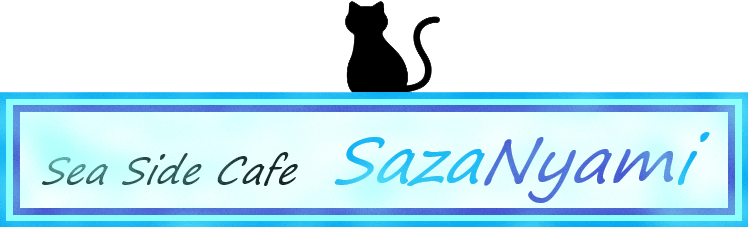
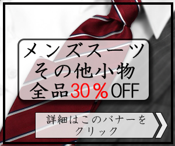
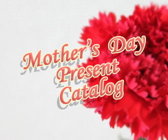
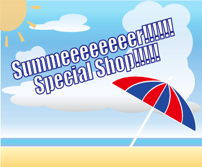
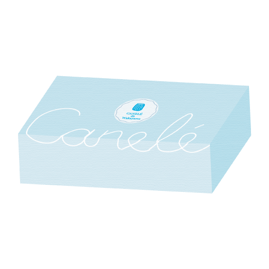
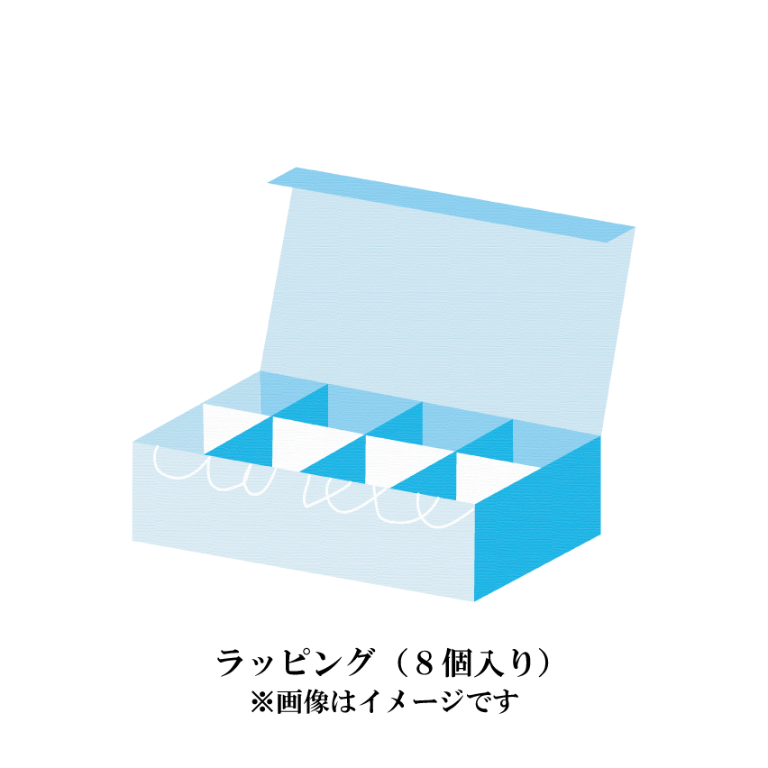

～About Me～
Name:南 創太（みなみ そうた）
2001年8月15日生まれ、和歌山県在住
デザインに興味を持ったきっかけは、
SNS上で、自分が好きなアニメキャラなどをモチーフにした
ロゴやアイコンを作成している人たちの真似をして、
スマホの簡易的なアイコン制作アプリを使って
自分だけのアイコンを作ったことです。
最近の趣味は、新しい景色を探しに出掛ける事です。
好奇心や発見力を養うため休みの日には原付にまたがり、とことこ走り回っています。
職業訓練では、Word、Excelでの文書作成や
Photoshop、Illustratorでのデザインについて学習しているほか、
Powerpointでのプレゼン、HTML・CSS言語を使ったWEBサイト制作、
ネットショップの運営についても学習しています。
～Skill～
Word・Excel
Wordでは正式なビジネス文書の作成、デザイン文字や画像を入れたポップの作成
Excelでは基礎的な関数と論理関数、検索行列、データベースなどを使ってデータの分析が可能
Powerpoint

Powerpointでは基本的なスライドの作成からアニメーションや音楽、動画の挿入が可能です。
職業訓練では模擬のプレゼンを実施しました。
タイピングスキル
タッチタイピングで10分間で1000文字前後の文章入力が可能です。
～My Works～
HTML・CSS

制作期間：１０日間
「海が見える小さなカフェ」をコンセプトに作成した架空のカフェのサイトです。
「海」を意識してブルー系を基調にし、落ち着く雰囲気になるように制作しました。
上の画像をクリックすると、実際のページに移動します。
Photoshop
|
 制作時間：４時間 「新生活応援」をテーマに作成しました。 見た目は分かりにくいですが、 ネクタイの赤が引き立つように ネクタイ以外の部分は白黒にしています。 |
 制作時間：４時間 「母の日」をテーマに作成しました。 赤系統の色を基調にし、 背景には母の日の象徴ともいえる 「カーネーション」の花を配置しています。 |
Illustrator
|
制作時間：６時間 テーマは「キャンプ」です。 夜の中のあたたかな光を表現するために シルエットの様なデザインに加え アクセントに暖色を配置しています。 |
 制作時間：６時間 テーマは「夏」です。 夏らしく青を基調に、 ぼかしなどは使わずに はきはきとしたイメージで作成しました。 |
|
 制作時間：２時間 ネットショップ制作サイト「Jimdo」で作成した 架空の洋菓子店で使用する ラッピングボックスです。 ３D効果を使用し、テクスチャで質感を再現しています。 |
 制作時間：４時間 先程紹介したボックスの 内側を再現しました。 ３D 効果ではなく、図形の組み合わせで 表現しています。 |